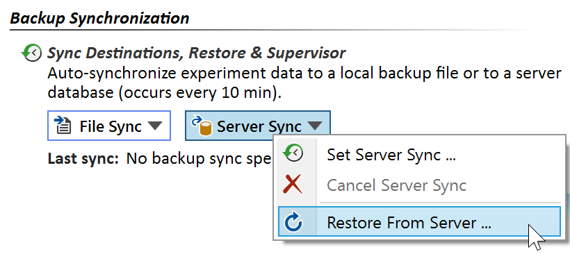

Restore
After a hardware failure or after moving to another PC without prior data migration, your experiment database might unexpectedly become unavailable. When Espresso ELN subsequently is re-installed on a new machine, it will start with the factory "Demo" user database. However, your own experiment database can easily be restored in this situation, if it was backed up by Espresso ELN backup synchronization. Due to the synchronization interval, at most the last 10 minutes of your work might be lost when restoring from backup synchronization.
Restore from a file backup or from the server is initiated from the File Sync or the Server Sync buttons located in the Dashboard section, by clicking the corresponding Restore From xx menu items:

- Restore From File backup: Opens an assistant guiding through the restore process from the file backup.
- Restore from server: Opens an assistant guiding through the restore process from the server. The personal ELN password is required to initiate the restore process. If the password is no more available for any reason, alternatively the ELN database administrator can use his login credentials to initiate the process. Check the 'Admin login' checkbox in this case.
Restore from Personal Documents backup: In the unlikely event that no server or backup file synchronization was established before a data loss, then restoring the personal documents folder backup (if established) will also restore your local Espresso ELN database. - If manual restore is required for some reason, then follow these steps: Exit Espresso ELN, replace the file 'EspressoData.db' located in the folder "\MyDocuments\Espresso ELN Data" by the analogous file in your backup, then restart Espresso ELN again.